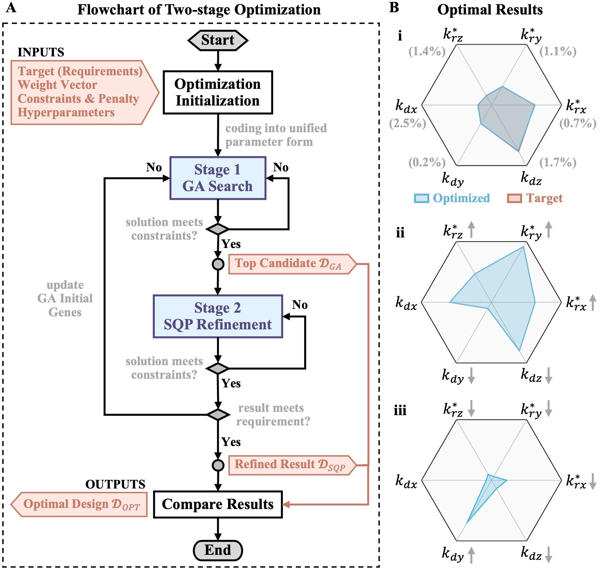
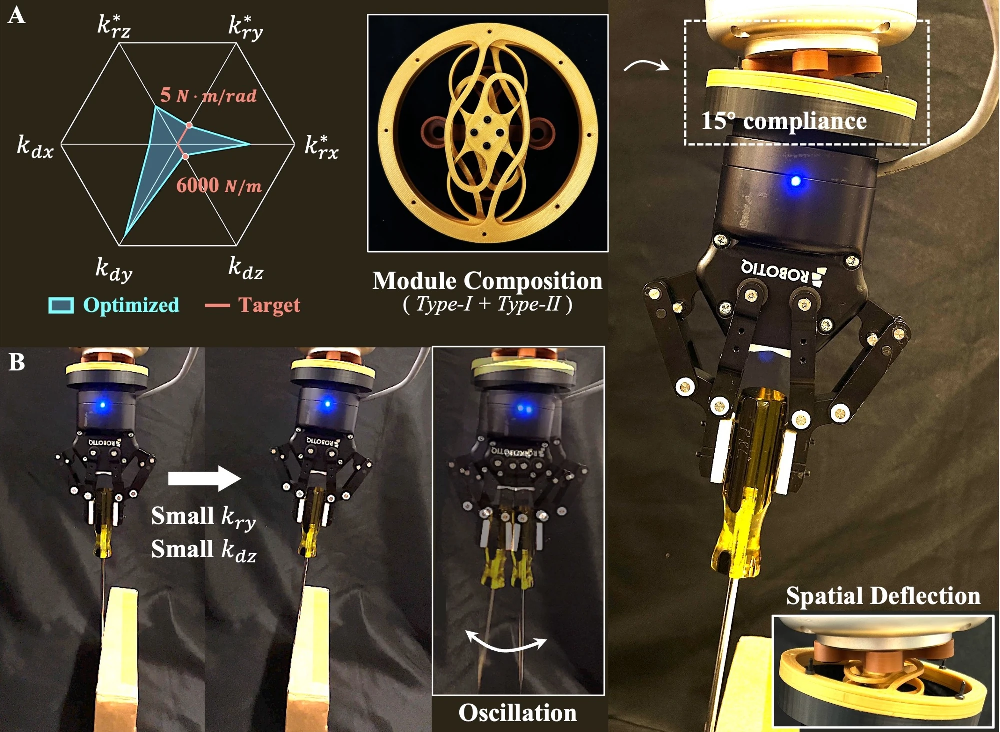
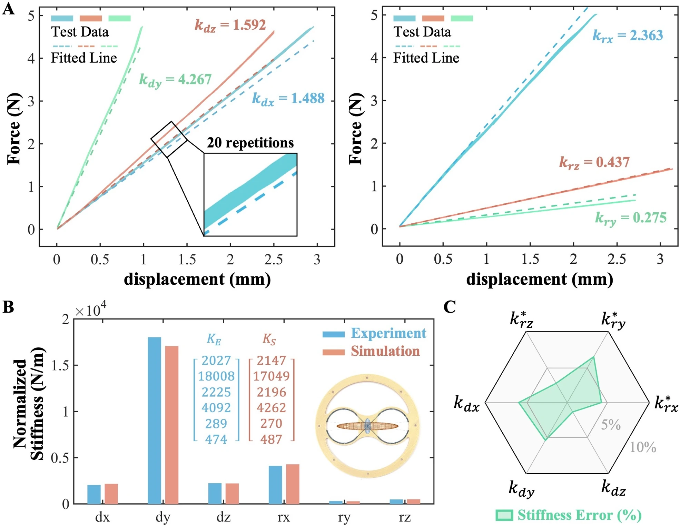

The idea
Build the stiffness
a task needs.
A flexible wrist should bend in the directions that help a task, while staying stiff where support is needed. We configure that behavior by stacking a small set of planar compliant modules.
Module geometry, beam width, plate thickness, and orientation determine the stiffness of the assembly. A unified model and two-stage optimization choose a composition for a desired stiffness profile. The same building blocks produce distinct contact responses without redesigning the complete mechanism.
01 / From planar parts to a flexible interface
Three geometries.
Many stiffness profiles.
Curved, spiral, and wavy beams give the three module types complementary stiffness characteristics. Adjusting their dimensions changes the balance between translation and rotation; changing their orientation swaps directional stiffness.
Click a module to flip it. Open all three to compare. Swipe to see the other modules.
Illustrative profiles redrawn from Figure 2B on a shared scale. Rotational terms: k*ri = 5kri/R². Original figure ↗
From a target to an assembly
A genetic algorithm selects module configurations, then sequential quadratic programming refines the continuous dimensions. The optimization can target specific stiffness values or relative preferences between components.
Specify
Target stiffness and geometric constraints
Compose
Module types, orientations, and dimensions
Stack
A flexible interface with the chosen stiffness
See the inverse design results

02 / Watch the contact response
Changing stiffness changes
what happens on contact.
A wrist with low rotational stiffness can reorient around an obstacle, but exhibits noticeable oscillation. A wrist with higher rotational stiffness resists reorientation and eventually tips the obstacle. The optimized composition balances compliance with the desired dynamic response.
Compliant interaction at 1 m/s
The optimized wrist targets a rotational stiffness of 5 N·m/rad and a translational stiffness of 6,000 N/m. It combines a Type-I module with two mirrored Type-II modules.
In the high-speed experiment, the robot moves back and forth at 1 m/s with a maximum imposed vertical offset of 10 mm. The wrist accommodates the obstacle on each contact. Approximately 15° of angular compliance is demonstrated in the tested condition.
See the optimized wrist assembly

03 / Check the model
Measured across
six stiffness components.
A fabricated Type-I module is loaded separately in six configurations. Each test repeats 20 times. Near the unloaded configuration, the measured force–displacement curves are fitted to identify the module stiffness.
After calibrating the material's elastic modulus, the model's deviation from the measured stiffness is below 6.5% for all six components, with an average deviation below 5%. Linear fits near the unloaded configuration achieve R² ≥ 0.99.

Scope of the current model
The framework models stiffness near the unloaded configuration and targets a diagonal stiffness matrix. The underlying planar structures still couple some stiffness components, so arbitrary profiles are not always attainable. Stack thickness, module offsets, and geometric interference can also affect the assembled behavior.
Paper & authors
A modular approach
to task-specific compliance.
Lego-Like Stiffness Configuration of Planar Compliant Modules for Task-Specific Flexible Interfaces
Siyue Yao, Xiaochi Xie, Shixuan Zhao, Yutong Li, Hao Li, Mark R. Cutkosky, and Genliang Chen.
Submitted to ICRA 2027 · Under review
Read the manuscript PDF ↗Full affiliations
- State Key Laboratory of Mechanical Systems and Vibration, Shanghai Jiao Tong University, Shanghai, China
- Department of Mechanical Engineering, Stanford University, USA
- Shanghai Key Laboratory of Intelligent Robotics, Shanghai Jiao Tong University, Shanghai, China
- META Robotics Institute, Shanghai Jiao Tong University, Shanghai, China
* Corresponding author: Genliang Chen
The complete experiment video
See the full sequence.
Stiffness verification, manual compliance, and side-by-side contact experiments in the original 49-second video.